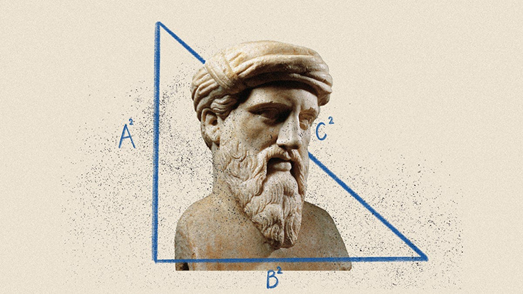

ความหมายและพื้นฐานของทฤษฎีบทพีทาโกรัส
ทฤษฎีบทพีทาโกรัส (Pythagorean Theorem) คือ ความสัมพันธ์ทางเรขาคณิตที่กล่าวถึงความยาวของด้านทั้งสามของรูปสามเหลี่ยมมุมฉาก .

ทฤษฎีบทพีทาโกรัส (Pythagorean Theorem) คือ ความสัมพันธ์ทางเรขาคณิตที่กล่าวถึงความยาวของด้านทั้งสามของรูปสามเหลี่ยมมุมฉาก .